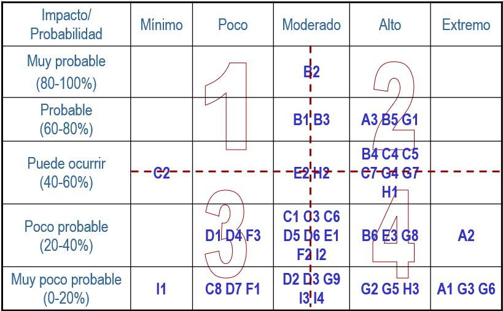
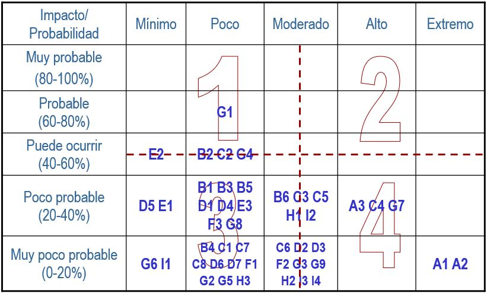
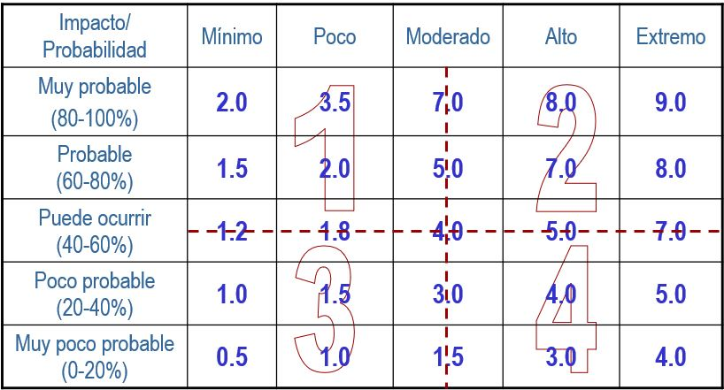
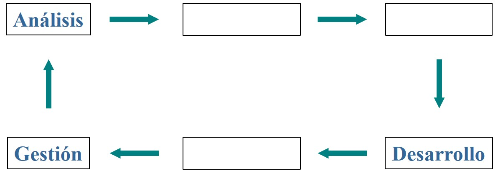

Capítulo 1 Metodología de diseño de redes
1.1 Introducción
Es impresionante constatar la gran cantidad de redes que han sido implementadas de manera empírica y reactiva: reaccionando a las demandas inmediatas de los usuarios sin tomar el tiempo necesario para hacer una buena planeación de la misma con base en las necesidades reales de la empresa.
La mayoría de estas redes están destinadas al fracaso conforme exceden una mínima complejidad: no fueron dimensionadas adecuadamente; no se contemplaron con anticipación aspectos fundamentales como la seguridad y la gestión de la red; no fueron previstos los requerimientos de escalabilidad a mediano plazo; etcétera. Es decir, este tipo de redes no fueron planificadas y por consiguiente las demandas de los usuarios tarde o temprano terminarán por exceder sus capacidades. Inspirados en las palabras de Dwigth D. Eisenhower:
“Nunca una batalla se ganó de acuerdo con el plan…. Pero jamás una batalla se ganó sin un plan”,
el objetivo principal de esta obra es presentar una metodología que facilite el diseño de redes eficientes. Esta metodología, basada en un diseño descendente, permite planear los requerimientos de la red a partir de los requerimientos de negocio de las aplicaciones y usuarios de la red.
Lo que se busca es proporcionar un marco operativo para hacer frente a la batalla permanente en la que se encontrará enfrentada la red debido a los factores tan dinámicos en los que ésta se verá inmersa (cambio tecnológico, nuevas aplicaciones, escenarios cambiantes de negocio y de usuarios, etc.).
¿Por qué una empresa desea una red?
Prácticamente todas les redes de interés no son triviales y fueron creadas para soportar las necesidades de una empresa u organización. Antes de presentar formalmente la metodología propuesta, conviene reconocer algunas razones que pueden motivar el despliegue de la infraestructura de red, como por ejemplo:
Satisfacer las necesidades de los clientes;
mejorar la comunicación interna y externa;
reducir el ciclo de diseño - fabricación - introducción al mercado;
incrementar la productividad y reducir los costos de operación;
responder con agilidad a las condiciones cambiantes del mercado.
Es claro que la empresa no busca como objetivo el tener la red más avanzada tecnológicamente hablando, sino que desea alcanzar uno o varios objetivos de negocio específicos. Por ello:
El mejor diseño NO es aquel que es tecnológicamente más avanzado, o el que aparece más elegante y eficiente desde el punto de vista de ingeniería. El mejor diseño es aquel que apoya con efectividad a la consecución de los objetivos de negocio y que, además, hace a la red invisible ante los ojos del usuario final.
Fracasos en proyectos de tecnología de información
Desde 1994, la consultora The Standish Group International ha venido realizando diversos estudios (conocidos como los reportes CHAOS) sobre la calidad de los proyectos de desarrollo de software en los Estados Unidos. La figura 1.1 presenta cómo han evolucionado estos reportes de 1994 a 2009.
Figura 1.1: Resolución de proyectos de desarrollo de software. Fuente: Política digital, con base en los estudios de The Standish Group
Aunque la encuesta se orientaba principalmente a proyectos de software, es bastante representativa de lo que ocurre con los proyectos de tecnología de información (TI) en general, incluidos los proyectos de infraestructura (redes, migraciones, etcétera).
Generalmente, un proyecto cambiado se excedió en tiempo, en recursos, o no cumplió con sus especificaciones. Se puede observar que apenas poco más de la cuarta parte de los proyectos de TI cubre con sus expectativas iniciales.
Otra encuesta indica que 53% de los proyectos de tecnología en realizados en el Reino Unido en 1999 costaron en promedio 189% más de lo originalmente estipulado.
La figura 1.2 presenta algunas de las principales causas que llevan a la anulación o cambio de proyectos, de acuerdo a lo reportado por las empresas en el estudio CHAOS de 1994. Estudios subsecuentes reflejan resultados similares.
Figura 1.2: Principales razones por las que un proyecto fue anulado o modificado. Fuente: The Standish Group, 1994
Como puede observarse, casi el 13% de los proyectos de TI falla porque los requerimientos no fueron suficientes. Esto no necesariamente significa que el cliente o el usuario no los haya proporcionado. En muchas ocasiones, el responsable del proyecto no los solicitó, no los entendió, o no los interpretó adecuadamente.
Todos los elementos identificados en la figura 1.2 han ocurrido y ocurren regularmente en proyectos de diseño y construcción de redes y sus servicios correspondientes. Todos ellos deben ser considerados riesgos potenciales de cualquier proyecto. Sortear los escollos que imponen estos riesgos requiere de orden, método y disciplina.
1.2 Diseño descendente
La figura 1.3 presenta el método de diseño llamado descendente, en el cual se estructura el contenido de estas notas.
Figura 1.3: El método de diseño descendente
El método inicia con un esfuerzo enfocado a comprender los objetivos de negocio de la organización que necesita la red, y de ahí a comprender los objetivos específicos que se deben fijar en términos de calidad y variedad de servicios a ofrecer. Con estos elementos, se podrán identificar las aplicaciones capaces de proporcionar los servicios necesarios y las implicaciones e impacto que dichas aplicaciones tendrán sobre la red que las soporta.
La identificación de las aplicaciones y sus características permite establecer los requerimientos con los que se realiza el diseño de la red, partiendo de los servicios que debe ofrecer a los usuarios (capas superiores), y aumentando el nivel de detalle hasta llegar al diseño físico con la selección de tecnologías y equipos específicos.
Como todo proceso de diseño, este método es iterativo y es consistente con el ciclo de vida de un proyecto de desarrollo de red, el cual se muestra en la figura 1.4.
Figura 1.4: El ciclo de vida de un proyecto de red
Si bien estas notas se centran en las dos primeras fases del ciclo de vida, y principalmente en la de diseño, las fases no son independientes. Por ejemplo, en el capítulo @ref(cap:dislog) se mostrará que durante el diseño lógico de la red se definen políticas de administración y monitoreo con las que se validará la red de producción.
El proceso es continuo. Una vez que los parámetros monitoreados indican que la red es insuficiente, o cuando los requerimientos cambian, se reinicia el ciclo.
1.3 Microsoft Solutions Framework
El diseño descendente es la metodología propuesta para realizar un proyecto de diseño de redes. También es necesario identificar una estrategia, una forma de trabajo que permita controlar de forma adecuada el desarrollo del proyecto. La que se presentará brevemente en este capítulo es la conocida como los Principios de Desarrollo de Infraestructura del Marco de Soluciones de Microsoft (Microsoft Solutions Framework, MSF).
Microsoft Solutions Framework es un conjunto de principios y procesos que resume las “mejores prácticas” en proyectos de TI. Es una disciplina de trabajo, no una metodología, que ayuda a estructurar el proceso, el equipo de trabajo y la administración de riesgos en proyectos de alta tecnología. Los Principios de Desarrollo de Infraestructura son el componente de MSF que se enfoca a proyectos de infraestructura de TI, más que a proyectos de desarrollo de software.
Para MSF, los cuatro componentes principales de un proyecto de diseño de redes se muestran en la figura 1.5 y son:
Figura 1.5: Componentes de MSF para el desarrollo de un proyecto de TI
- El modelo de equipo.
-
Explica cuáles son los principales roles y funciones que deben ser cubiertos en el proceso de organizar y estructurar nuestro equipo de trabajo.
- El modelo de proceso.
-
Explica cuáles son las diferentes fases del proyecto y sobre qué aspectos debe hacerse énfasis en cada proyecto.
- El diseño de red.
-
Señala, desde un punto de vista técnico, cuáles son los pasos a seguir y qué variables deben ser consideradas en el proceso de análisis y diseño de la red.
- El análisis de riesgos.
-
Explica cómo se pueden detectar y evaluar los diferentes tipos de riesgo que afectan al proyecto y el tratamiento que se les debe dar con objeto de evitar que se materialicen o, si es imposible evitarlos, cómo aminorar sus efectos lo más posible.
Podría decirse que el modelo de diseño descendente explica los pasos a seguir para completar el diseño de una red mientras que los Principios de Desarrollo de Infraestructura explican cómo organizar los otros tres componentes y cómo mantener balanceado el triángulo de variables a gestionar:
Recursos (humanos y materiales) para realizar el proyecto;
funciones que habrá de ofrecer la red y sistemas asociados;
calendario que deberá cumplirse para llevar el proyecto al éxito.
La base de ese triángulo es la calidad. Estos tres componentes deben estar bien apuntalados con el fin de mantener equilibrado el triángulo de calidad.
MSF reconoce que en los proyectos tecnológicos actuales existe una gran cantidad de riesgos propios de la naturaleza cambiante de las mismas tecnologías, así como de su utilización en condiciones diferentes a aquellas para las que fueron desarrolladas.
MSF hace énfasis en identificar y comprender los riesgos que amenazan al proyecto para poder trabajar en su control y mitigación y finalmente busca facilitar la división de la visión en porciones o versiones con alcances intermedios y realistas.
1.3.1 Modelo de proceso
Figura 1.6: Las cuatro fases del modelo de proceso de MSF para el desarrollo de infraestructura
El modelo de proceso marca cuatro fases para todo proyecto: visión, planeación, desarrollo y despliegue. Cada una de ellas tiene un punto claro de cierre que va acompañado con un entregable específico. Este punto de cierre se representa por el diamante azul en la figura 1.6. Es muy importante que haya un acuerdo claro, y preferentemente firmado, por todos los jugadores al final de cada fase.
- Visión/Alcance.
-
La primera fase busca establecer una Visión conjunta del proyecto, determinar el alcance del mismo y establecer en forma general las condiciones iniciales de que se dispone para el proyecto. Así mismo es importante entender los elementos básicos y objetivos de negocio generales de la organización que necesita la red. La palabra clave en esta fase es Escuchar.
- Planeación.
-
La segunda fase busca caracterizar todos los aspectos importantes de la red y/o infraestructura ya existente, transformar los objetivos y alcances de negocio expresados en la fase anterior a requerimientos técnicos que habrán de ser cumplidos por el diseño que se elaborará en esta. La palabra clave en esta fase es Proponer.
- Desarrollo.
-
La tercera fase busca evaluar y validar el diseño propuesto, evaluar las nuevas y diferentes tecnologías propuestas para integrar la solución y proponer los ajustes necesarios al diseño y planes propuestos en la fase anterior. Las pruebas se realizan primero a nivel individual para cada nueva tecnología, y posteriormente se realizan pruebas de integración y pilotos. Esta fase concluye con la liberación de la solución/diseño propuestos y las palabras clave son Analizar y Probar.
- Despliegue.
-
La última fase es propiamente el despliegue e implementación de la solución de acuerdo con el diseño propuesto. Los elementos centrales a considerar en esta etapa son la logística y la comunicación con el cliente. La palabra clave para esta fase es Actuar.
Para MSF es fundamental el concepto de desarrollo por versiones mostrado en la figura 1.7. Como se verá más adelante, para una primera versión se definen algunas de las especificaciones más importantes del proyecto con las cuales se realiza una primera iteración en el modelo de proceso.
Figura 1.7: En MSF el proyecto va creciendo en funcionalidad en distintas versiones
Para una nueva iteración se incorporan las especificaciones que habían quedado fuera junto con las solicitudes adicionales del cliente y de los usuarios que se han ido recabando. Estos requerimientos se evalúan a la luz del triángulo de recursos y calidad para elegir los requerimientos con los que se realizará la nueva iteración, dejando los demás para versiones futuras.
El diseño por versiones es conveniente para el desarrollador con el fin de minimizar los riesgos y mantener el control sobre el proyecto. También es conveniente para el cliente pues en proyectos de TI, es común que el usuario identifique con mayor claridad lo que realmente desea y necesita conforme empieza trabajando con el nuevo producto.
1.3.1.1 Fase I: Visión y alcance. (Escuchar)
Figura 1.8: La fase de visión/alcance de MSF y sus entregables
Es conveniente recordar que ninguna empresa diseña y construye redes porque desea tener la tecnología más novedosa. Las organizaciones suelen, o al menos debieran, tener objetivos claros y específicos sobre lo que quieren lograr o facilitar con la construcción de una red de comunicaciones, como de cualquier otro proyecto de tecnología de información. Lo que las empresas buscan con la red es alcanzar uno o varios objetivos de negocio. El proyecto tendrá éxito en la medida en la que esto se comprenda.
Lo primero que debe conseguirse en esta fase, es el establecimiento de una Visión única de lo que se desea lograr. La Visión es la imagen que se forman y comparten todos los involucrados sobre lo que el proyecto les permitirá hacer cuando esté terminado.
Una visión puede ser demasiado extensa y concebida en el largo plazo, en cuyo caso es conveniente descomponerla en partes más pequeñas llamadas versiones, que permitirán tener un acercamiento gradual y ordenado hacia la visión final. Es importante explicar desde el principio el concepto de desarrollo por versiones a clientes y usuarios, de manera que se puedan asignar prioridades a las especificaciones y se eviten expectativas no realistas en las primeras versiones del proyecto.
Por ello es necesario definir el alcance inmediato del proyecto, es decir, hasta dónde llegará la versión actual en la que se estará trabajando, en su camino a la consecución de la visión. La mejor manera de lograr esto es definiendo un número limitado de objetivos claros y concretos, como se verá más adelante.
De la figura 1.2 se infiere que el no definir los objetivos con precisión, puede tener un efecto devastador para el proyecto. Por ello, es fundamental escuchar y entender claramente las necesidades de los usuarios y de sus aplicaciones. Es importante también identificar lo que suele llamarse la cultura tecnológica reinante dentro de la empresa (tecnologías dominantes, experiencia de los usuarios y administradores, acuerdos de negocio predefinidos) y su cultura social (estructura jerárquica, grupos dominantes, apertura de comunicación, flexibilidad al cambio, etc.).
La Visión
La visión es primordialmente un documento de negocios, escrito para una audiencia de negocios, por lo que se debe evitar utilizar un lenguaje demasiado técnico y, sobre todo, pensar en tecnologías específicas en esta fase.
Si bien es cierto que un proyecto de diseño de red es eminentemente tecnológico y que el impacto sobre el negocio es principalmente indirecto, es extremadamente importante que la visión y los objetivos estén especificados en un lenguaje que pueda ser entendido por el cliente, y que este se sienta identificado tanto con la visión como con los objetivos.
Es fundamental establecer una visión conjunta, que sea enunciada por el cliente, y que los integrantes del proyecto entiendan y compartan. Una visión que entienda que una red está al servicio del negocio. Nunca al revés.
La visión es la traducción a palabras de cómo será el ambiente ideal que habrá de traer la solución. El tener una visión y objetivos compartidos proporciona una serie de beneficios a todos los involucrados, entre los que se pueden destacar:
compromiso de todo el equipo para lograr los objetivos y así avanzar hacia la visión;
ayuda a todos los miembros del equipo a dirigir sus esfuerzos hacia el mismo objetivo;
evita posibles conflictos futuros;
ayuda al equipo a identificar y aplicar los recursos de manera apropiada;
le da identidad al equipo;
motiva al equipo.
El alcance
Una vez obtenida la visión, se procede a establecer el alcance de ESTA versión pues es probable que la visión sea demasiado amplia para poder ser lograda de una sola vez.
Definir los alcances para la versión particular que se está especificando, permite mapear la visión contra la realidad actual. En este mapeo se debe tomar en cuenta aquello que el cliente considera indispensable para el éxito del proyecto. Esto permite acotar la versión actual a un número limitado de objetivos muy concretos y desplazar lo no esencial hacia versiones futuras.
Para poder lograr esto es fundamental haber definido con el cliente una visión y objetivos compartidos. Sin este compromiso, el cliente bien podría tomar la posición de “quererlo todo, quererlo bien, quererlo ahora”:
sin retardos
sin costo para el usuario
sin restricciones de protocolos ni de funcionalidad
sin restricciones físicas ni lógicas
sin errores
acceso universal
interconectividad entre redes
facilidades de difusión
Al recibir una lista como la anterior, es necesario cuestionar si el cliente realmente depende de esos requerimientos. Como se verá más adelante, este tipo de criterios puede entrar en serios conflictos con otros requerimientos de la red, lo cual puede comprometer todo el proyecto. Pero además, si no se han definido los alcances de manera conjunta, lo más probable es que los requerimientos del usuario sean vagos, incompletos, y, además, variarán durante el tiempo de vida del proyecto.
La imagen y la comprensión común sobre lo que se va a hacer y los objetivos del proyecto tienen que estar totalmente claros, como también lo deben estar para el usuario las implicaciones de las decisiones que se toman en términos de restricciones futuras, costos y riesgos. Si hay algo que el cliente/usuario solicita y se considera que no se puede o que tiene implicaciones graves en términos de costo, tiempos, etc. este es el mejor momento para decirlo.
Be SMART
Los objetivos de negocio y los criterios de éxito (que pueden ser los mismos), tienen que ser claros, acotados y limitados a no más de cinco, y preferentemente menos de tres. Pueden ser técnicos y de negocio, de preferencia una combinación de ambos.
Vaguedades en la definición de cualquier objetivo puede conducir a no cubrir las expectativas del cliente, a no tener claro cuándo se ha cumplido (y por consiguiente a alargar el proyecto indefinidamente), y en general a situaciones que redundarán en la inconformidad y consiguiente insatisfacción del cliente.
Al definir los objetivos de esta versión del proyecto, es muy importante que cumplan con los criterios “SMART”2:
Specific.- Deben establecer claramente lo que se debe realizar (“qué,
quién, cuándo, cómo, por qué”).
Mesurable.- Deben ser determinados en términos cuantitativos, que puedan
medirse para establecer si se está cumpliendo el objetivo.
Achievable.- Deben ser realizables en esta versión del producto o en esta
iteración del proyecto considerando las capacidades y restricciones
impuestas.
Realistic.- Debe tratarse de objetivos en los que se puede y se desea
trabajar.
Time-oriented.- Deben estar claramente especificados en un horizonte de tiempo realista.
En muchas ocasiones es el cliente mismo quien no está interesado o dispuesto a establecer estos objetivos SMART. Las razones para esto pueden ser variadas, pero radican típicamente en el hecho de que el cliente mismo no tiene claro qué es lo que quiere o puede pedir. Es altamente recomendable trabajar con él para llegar a una definición precisa.
La opción aquí es rechazar el proyecto, actitud por demás profesional y recomendable si la indefinición es extrema, o correr el riesgo de la insatisfacción final o de pérdidas económicas por no haber podido dimensionarlo apropiadamente.
Culminando la fase de visión/alcance
El entregable en esta etapa es un documento muy completo de visión y alcance, el cual contiene típicamente:
visión del negocio;
objetivos de negocio y criterios de éxito definidos con características SMART;
otra información de negocio;
estructura corporativa a nivel macro o medio, según sea necesario;
distribución geográfica de oficinas, personal y departamentos. Toda aquella información que permita posteriormente evaluar las necesidades de hoy y las posibles necesidades en términos de escalabilidad: ¿Cuánto espera el cliente crecer en el futuro y en dónde?
identificar tipos de usuario, puede ser por departamento por función, rango, etc. En la siguiente fase se buscará entender cuáles son las necesidades de cada tipo de usuario;
presupuesto;
políticas y estándares corporativos relevantes;
información técnica;
requerimientos de seguridad.
El documento de visión puede incluir la documentación concerniente a la red actual (si existe) y las minutas de las reuniones realizadas durante esta fase. Para poder integrar este documento de la mejor manera posible, es necesario recabar bastante información (la palabra clave aquí es escuchar). Un ejemplo del tipo de información a colectar en esta etapa es:
uso que dará el usuario a la red, sin tener en cuenta cómo estará internamente implementada;
tipo y número de usuarios y aplicaciones haciendo uso de la red;
caracterización de aplicaciones;
requerimientos geográficos;
prioridades por aplicación o tipo de tráfico;
interconexión a otras redes y a la Internet;
expectativas de tiempo de acceso y respuesta;
requerimientos de disponibilidad y confiabilidad;
requerimientos de seguridad;
holgura y capacidad para demanda futura de servicio;
tarificación;
restricciones presupuestales.
Este documento permitirá iniciar con un diseño conceptual de la red. También permitirá identificar el orden en el que se responderá a los requerimientos de negocio, ayudará a cimentar el plan maestro y calendario de trabajo que serán definidos en la etapa siguiente, y dará una estimación de los recursos humanos, económicos y tecnológicos necesarios para completar el proyecto.
Un buen documento para cerrar esta etapa deja sentadas las bases para traducir las necesidades y objetivos de negocios en él expresadas, a requerimientos técnicos3. Por otra parte, este documento debe reflejar claramente que se ha llegado a un acuerdo entre todos los involucrados acerca de los siguientes puntos:
los objetivos de negocio;
la visión del proyecto y el alcance de esta versión;
el diseño conceptual de la solución propuesta;
los entregables identificados;
una idea general del orden de recursos necesarios;
un plan para la siguiente fase;
un documento de análisis de riesgos.
1.3.1.2 Fase II: Planeación. (Proponer)
Figura 1.9: La fase de planeación de MSF y sus entregables
En la primera fase del proyecto se enfatizó en comprender las necesidades y objetivos de negocio. Al hacerlo se fue aclarando el tipo de aplicaciones y servicios que se utilizarán y algunas de las restricciones impuestas por ellos, ya sea porque existan y se manifiesten antes del inicio del proyecto, o porque vayan a aparecer durante o después del mismo.
En esta fase el resto de las restricciones impuestas por las aplicaciones y servicios deberán conocerse. Contando con esta información, se podrá avanzar en el diseño de las cuatro capas inferiores de la red. Se está aplicando el método descendente de diseño de redes al comenzar por las capas superiores (necesidades de negocio, aplicaciones y requerimientos) y con ello la funcionalidad y especificaciones necesarias para las capas más bajas se va aclarando. Es importante realizar un trabajo detallado y exhaustivo para comprender las implicaciones y restricciones impuestas por las necesidades y objetivos de negocio, así como las implicaciones y restricciones impuestas por las aplicaciones que se ejecutarán.
Sin embargo, siempre existirá la posibilidad de que las aplicaciones se comporten de una manera diferente a lo esperado, por ejemplo, porque el nivel de carga es muy distinto a lo planeado, por cambios de versión, por especificaciones inexactas por parte del proveedor, etc. Por ello, se debe realizar un buen análisis de riesgos, para poder tomar decisiones apropiadas en lo que se refiere a garantizar calidad de servicio en las etapas iniciales, o inclusive posteriores al inicio de la operación del proyecto.
Los entregables de esta fase están constituidos por borradores de los documentos individuales, pues el diseño no puede validarse sino hasta la siguiente fase, en la que se realiza una serie de pruebas de concepto. Es posible que esas pruebas generen cambios en el diseño propuesto. Una vez concluidas las pruebas necesarias en la Fase III, se procede a fijar el diseño y con ello el plan y el calendario maestros.
El proceso de diseño
El proceso de diseño es iterativo y pasa por tres etapas, cada una agregando mayor nivel de detalle que la anterior.
- Diseño conceptual.
-
El diseño conceptual ocurre durante la fase de Visión/Alcance y consiste en listar y entender los diferentes elementos de negocio que intervendrán en la solución final. Es decir, considerar y entender qué factores de organización de la compañía, distribución geográfica y características propias del negocio tendrán un impacto en el diseño de la red. Una vez conocidos estos elementos, se procede a elaborar un borrador o diseño inicial que se habrá de enfocar en representar la funcionalidad y distribución general requerida, incorporando poco o ningún detalle de tipo técnico. Este es un diseño que fácilmente podrán comprender las personas de áreas de negocios.
- Diseño lógico.
-
Las siguientes etapas ocurren durante la fase de Planeación. Se realiza un primer plano técnico de la solución, sin incluir dimensionamientos, modelos ni configuraciones específicas.
- Diseño físico.
-
Una vez que el diseño lógico está completo y se considera que cumple con los requisitos establecidos, se incrementa el nivel de detalle, agregando modelos, configuraciones y demás especificaciones, llegando con esto al máximo nivel de detalle posible en papel.
Durante las etapas de diseño se habrán de ir integrando las tres componentes fundamentales del documento que termina esta etapa:
- Especificación funcional.
-
Indica el qué debe hacerse.
- Plan maestro.
-
Indica el cómo y con qué recursos la solución será desarrollada, evaluada y desplegada.
- Calendario maestro.
-
Indica el cuándo se harán dichos desarrollos, evaluaciones y despliegues.
Este documento debe ser considerado como un contrato entre las personas que desarrollan el proyecto, el cliente y usuarios. Es vital que haya un acuerdo claro en lo que se refiere a la funcionalidad esperada en esta versión del producto por todas las partes.
Especificación Funcional
La especificación funcional es el documento de diseño propiamente, en el cual se incluyen los objetivos y requerimientos de negocio como fueron expresados en el documento de Visión/Alcance. De hecho, el documento de Visión/Alcance sirve por lo general como introducción a este documento.
Para poder hacer una especificación funcional adecuada, es necesario recabar el máximo de información posible, por ejemplo:
documento de visión/alcance;
caracterización de la red (topología de red, flujos de información, características del tráfico);
diseño de red: conceptual, lógico (requerimientos de seguridad, administración, QoS, etc.), y físico (selección de tecnologías, estándares, dispositivos, capacidades, protocolos, etcétera).
La especificación funcional deberá proporcionar una indicación clara y concisa sobre cómo se cumplirá con los requerimientos de diseño y cómo se responderá a las necesidades de negocio. Si hay una limitante grave, hay que sacarla a la luz cuanto antes. También debe quedar claro de qué manera la solución propuesta se integra con los estándares y políticas corporativas.
Durante la caracterización de la red, se obtendrá una definición completa de los perfiles de usuario y sus necesidades: se deberán detallar los “tipos” de usuario definidos por las aplicaciones que utilizan; ¿Dónde se encuentran las aplicaciones y servicios a los que tendrán acceso?; ¿Quién necesita acceso remoto y desde dónde?
También se deberán identificar los requerimientos técnicos y las limitaciones de las configuraciones resultantes, y cómo responderá el diseño a los mismos. Se deberán especificar los requerimientos mínimos de hardware, software y de comunicaciones para la solución propuesta.
Desde la especificación funcional se define la estrategia de administración y monitoreo: se seleccionan los métodos para recolección periódica de información; se identifican “signos vitales” de la red; se empiezan a documentar los procesos o pasos a seguir en caso de detectar diversas fallas en la red; se especifican los métodos de escalamiento, los reportes de fallas a proveedores de productos y servicios; se delinea la implementación de una mesa de ayuda, si ésta no existe.
Los siguientes son algunos de los riesgos más importantes que deben evitarse al documentar la especificación funcional:
falta de detalle que impida hacer las pruebas y/o despliegue apropiados;
diseño demasiado costoso para ser implementado;
demasiada información innecesaria;
congelar el diseño antes de tener la información apropiada;
especificación incompleta al momento de iniciar los trabajos finales.
Plan maestro
El plan maestro enuncia la secuencia de tareas y actividades que habrán de realizarse e indica quién es el responsable de cada una y quiénes participan. Esto es muy importante ya que de otra manera se dejará abierta la puerta a todo tipo de riesgos y malentendidos.
En el borrador del plan maestro se detalla la estrategia de pruebas y el plan piloto así como el plan y la estrategia de despliegue. Esta información permitirá dar una estimación de los recursos humanos, económicos y tecnológicos necesarios para completar el proyecto. También deberá incluir un plan de capacitación a personal técnico y a usuarios, así como una estrategia de comunicación entre los participantes. Finalmente, se debe especificar el presupuesto disponible junto con el plan de flujo financiero y de adquisiciones.
Calendario maestro
El calendario maestro indica las fechas en las que se realizarán las diferentes actividades. En él debe especificarse la secuencia y duración de todas las actividades antes señaladas. Es común y recomendable que se trate de diseñar un calendario maestro que permita incluir el llamado tiempo buffer para manejar la incertidumbre. Bajo este esquema, se consideran dos fechas objetivo: una interna (fecha real) y otra externa, para el cliente. Como se observa en la figura 1.10, la diferencia entre la fecha objetivo interna y la externa es el tiempo buffer.
Figura 1.10: Buffer interno para manejar la incertidumbre
Esta es una práctica sana, siempre y cuando no se abuse de la misma. Como los proyectos de TI involucran una gran cantidad de variables que pueden modificar tiempo y resultados, es conveniente que el administrador del proyecto mantenga tiempos de reserva que puedan ser utilizados para cubrir los imprevistos. Dicho margen o buffer está bajo su control y se utiliza para emergencias.
Es muy importante subrayar que el análisis, el diseño y las pruebas deben realizarse en forma completa, de tal manera que la especificación funcional, el plan maestro y el calendario maestro se basen en información concreta y lo más realista posible, en hechos. Los buffers de tiempo mencionados aquí serán insuficientes si se utilizan como margen de error para un proyecto mal diseñado.
Culminando la fase de planeación
Para finalizar la fase de planeación es necesario que el diseño esté concluido en su totalidad. Se debe contar con un acuerdo grupal sobre los elementos desarrollados durante la planeación: especificación funcional, plan maestro, calendario maestro y una nueva iteración del análisis de riesgos.
1.3.1.3 Fase III: Desarrollo. (Analizar y probar)
Figura 1.11: La fase de desarrollo de MSF y sus entregables
El proceso de construir e integrar porciones de la solución para convertir la especificación en una solución completa es lo que se conoce como el desarrollo de la infraestructura. En esta fase se busca evaluar y validar el diseño, empezando por evaluar las nuevas tecnologías propuestas para integrar la solución y, eventualmente, proponer los ajustes necesarios al diseño original.
Las pruebas se realizan de manera cíclica e incremental: pasando por las etapas de desarrollo, evaluación y validación contra los criterios de aceptación previamente definidos. Este ciclo se aplica a nivel individual, para cada nueva tecnología y posteriormente, para las pruebas de integración e implementación de los pilotos.
Validación de la tecnología
Conforme se están validando las nuevas tecnologías seleccionadas, en esta etapa se van creando manuales de instalación y operación y otros documentos de apoyo (capacitación, bitácoras, etc.). Por lo tanto, la validación de tecnologías incluye realizar las actividades siguientes:
analizar los criterios de selección de tecnologías, sobre todo si éstas son nuevas;
instalar y configurar manualmente en condiciones ideales;
documentar los pasos a seguir para que opere correctamente;
comenzar a identificar y documentar pendientes y riesgos tecnológicos;
actualizar el calendario de trabajo con base en los riesgos detectados.
El desarrollar una campaña de pruebas es una tarea compleja que puede demandar muchos recursos (tiempo, equipo, personal) y que puede no arrojar los resultados esperados si no se hace correctamente. Por ello, es muy importante que se dedique el tiempo necesario para diseñar las pruebas en función de los objetivos que se persiguen. Algunos de los objetivos que deben quedar claros en esta etapa son:
sacar a la luz todos los puntos que el equipo debe resolver;
validar lo que se tiene contra la especificación funcional;
realizar pruebas de regresión (cuando la solución falla o hace fallar algo en el ambiente de operación);
determinar si la solución requiere componentes adicionales (controladores actualizados, librerías dinámicas, versiones específicas de ambientes operativos, etcétera).
Es fundamental poder separar el ambiente de pruebas del de producción en las primeras etapas del proceso de evaluación: errores o problemas detectados con la solución evaluada no deben afectar a la red de producción. Esta etapa de la fase de desarrollo es conocida como de pruebas de preproducción y sus objetivos son los siguientes:
probar tanto de la solución como sea posible, antes de integrar el piloto;
evaluar resultados contra los objetivos y criterios de éxito;
completar guías de instalación (checklists) y desarrollar procedimientos automatizados para ello (bitácoras, scripts, etcétera);
desarrollar el material de capacitación completo;
resolver pendientes y problemas de soporte.
El automatizar en la medida de lo posible las tareas de instalación y validación es sumamente aconsejable, pues ello contribuye a disminuir tiempos y esfuerzo en la etapa de despliegue, reduce drásticamente los retardos debidos a errores humanos, proporciona lineamientos para diagnosticar y corregir problemas, y ayuda en la definición de procedimientos de respaldo y recuperación de desastres.
Otros entregables que deben generarse al realizar las validaciones en esta etapa, están orientados al personal encargado de la operación de la red en producción e incluyen documentos que abarquen temas como:
requerimientos especiales para mantenimiento de clientes, servidores y dispositivos de red;
lineamientos para recuperación de desastres y reinstalación;
monitoreo de fallas y parámetros de desempeño en operación normal;
soporte y solución de problemas;
procedimientos de respaldo.
Prueba de concepto
Una vez que las herramientas individuales han sido evaluadas, la prueba de concepto consiste en validar la solución completa inmediatamente antes de integrarla a la red de producción. Específicamente, debe validarse que se cumple completamente con los requerimientos de diseño. Esto se hace generalmente junto con el cliente y/o personal que va a operar la red de manera cotidiana, y basándose en el plan de pruebas definido con anterioridad.
Conforme se va integrando la prueba de concepto, se seguirán documentando los procesos de implementación, se desarrollarán mecanismos de automatización para la instalación y despliegue, se verificarán y complementarán las guías de instalación y se desarrollarán manuales de operación.
Prueba piloto
El piloto es el momento en que se evalúa la solución dentro del ambiente de producción. Es una actividad muy importante pues valida la solución completa y su integración con los sistemas ya implementados. Además, se debe considerar al piloto como un proceso de entrenamiento hacia la fase de despliegue que permite verificar que todo lo que se ha hecho durante la fase de desarrollo está correcto y completo:
procesos de instalación y automatización;
identificar pendientes y darles seguimiento;
realizar y probar planes de recuperación;
checklist de preparación del sitio;
materiales de capacitación para el usuario y para los administradores de la red.
Implementar y activar el piloto puede tener serias consecuencias en la operación de los sistemas y dispositivos en la red de producción, por lo que debe haber una muy buena planeación, manteniendo una estrecha comunicación con todos los involucrados. Por ejemplo, se deberá:
asegurar que se tiene el soporte técnico y los recursos necesarios para instalar y activar el piloto (identificación y acceso a los locales donde se llevará a cabo la instalación; disponibilidad de espacio, de energía eléctrica, de direcciones de red, de posibles contraseñas para acceder y configurar equipo, etcétera);
identificar a usuarios del piloto, comunicarse con ellos y asegurar que existe un proceso de retroalimentación por su parte;
encontrar horarios fuera y dentro de horas laborales para llevar a cabo distintos tipos de evaluación (desempeño, interoperabilidad, estrés, etcétera);
prevenir a los usuarios de posibles degradaciones en la calidad de servicio durante la fase de evaluación.
Culminando la fase de desarrollo
Al terminar esta fase ya no puede haber cambios en el diseño. Debe existir un acuerdo sobre las tecnologías empleadas, el plan y documentación para apoyar la capacitación de usuarios y administradores y sobre las actualizaciones al plan maestro y al calendario maestro del proyecto.
Los entregables de esta fase son todos los documentos desarrollados a lo largo de las evaluaciones: material de capacitación, estrategias para el proceso de despliegue, procedimientos automatizados de instalación, checklists para configuración e instalación, guías para el personal de operaciones; etcétera.
1.3.1.4 Fase IV: Despliegue. (Actuar)
Figura 1.12: La fase de despliegue de MSF y sus entregables
En la última fase se lleva a cabo el despliegue e implementación de la solución de acuerdo con el diseño propuesto y se cierra el proyecto. Básicamente existen dos estrategias: despliegue en serie, en donde se parte implementando el núcleo de la red y se van agregando sitios de acuerdo a su orden de importancia, y despliegue en paralelo en el que todos los sitios se van implementando más o menos al mismo tiempo.
Con la estrategia de despliegue en serie se reduce el riesgo del proyecto, la necesidad de personal especializado y la erogación de recursos. Sin embargo, aumenta el tiempo de liberación de la solución completa. La decisión dependerá, en realidad, de las características del proyecto y de los recursos disponibles.
En cualquier caso, el despliegue de un sitio pasa básicamente por las mismas etapas, que son:
- Preparación del sitio.
-
Se valida información obtenida a lo largo del proyecto, se realiza el plan de despliegue para el sitio y se notifica a los usuarios sobre el calendario y las perturbaciones posibles que sufrirán.
- Instalación de la solución.
-
Al igual que en la etapa de desarrollo, se debe tener una estrecha comunicación con los administradores de la red para garantizar que se dispone de los recursos físicos y lógicos para llevar a cabo la instalación.
- Capacitación del personal.
-
En función de los objetivos y alcances del proyecto, el plan de capacitación puede incluir a los administradores y operadores de la red, a los encargados de la mesa de ayuda, y a los usuarios finales.
- Estabilización.
-
Es importante que el sistema quede estabilizado cuando aún está presente el personal responsable del diseño y se está migrando la gestión del mismo al personal de operaciones. Esta transición debería incluir la activación del sistema de reportes (mesa de ayuda), la creación de bitácoras de fallas, estrategia de solución y análisis de tendencias que permita la creación de una base de conocimiento. La etapa de estabilización termina con la aceptación final.
Culminando la fase de despliegue
Una vez que se ha liberado y estabilizado el proyecto, se obtendrá la aceptación final por parte del cliente, pero para el equipo de trabajo el proyecto no ha terminado pues debe hacerse una revisión de las experiencias adquiridas a lo largo del desarrollo del proyecto que permita plasmar en un reporte final las consideraciones a tomar en cuenta para proyectos futuros similares al recién liberado.
1.4 Análisis de riesgos
El análisis de riesgos es una actividad fundamental en toda metodología formal de administración de proyectos. Para MSF, se trata de uno de los cuatro componentes fundamentales y constituye una actividad continua a todo lo largo del modelo de proceso. Tiene por objetivo identificar las fuentes principales de riesgos, sus implicaciones y la forma en la que estos pueden ser controlados.
Los riesgos son peligros que se presentan y amenazan el éxito del proyecto; su identificación es algo completamente deseable y su solución y mitigación es responsabilidad del equipo entero.
Al identificar el riesgo global del proyecto se busca determinar cuáles son las implicaciones si el proyecto falla completamente o si no corresponde a las expectativas. Hay que empezar por establecer si el proyecto es crítico para la operación de la empresa.
También es importante conocer el nivel de visibilidad y repercusión del proyecto: ¿El éxito (o fracaso) del proyecto es visible por otras áreas? ¿Por las áreas directivas? ¿Por los clientes? La respuesta a estas preguntas puede influir de manera importante en los criterios de diseño a emplear.
Los riesgos se pueden originar de las más diversas fuentes, entre las más evidentes se pueden citar:
definición imprecisa de visión, objetivos y restricciones;
nivel de motivación en la decisión o dirección de la organización;
perfil y compromiso de clientes o usuarios;
presupuesto, costo, calendario y recursos humanos;
características del proyecto;
ambiente y proceso de desarrollo e implementación;
ambiente de operaciones;
nuevas tecnologías.
Las restricciones del proyecto son riesgos naturales que deben ser identificados. La siguiente lista muestra algunos aspectos que deben ser típicamente tomados en cuenta durante la fase de análisis de riesgos:
restricciones presupuestales y gestión del mismo;
adquisición de equipo, software, licencias, etcétera;
contratación / capacitación de personal;
agenda: ¿Existen agendas ocultas? ¿El proyecto ya se ha retrasado? ¿Se está retomando un proyecto que fue abandonado por otro grupo? ¿Por qué?;
políticas y estrategias;
existencia de grupos de poder: tomadores de decisiones vs. seguidores;
implicaciones del proyecto: ¿A quién beneficia el éxito del proyecto? ¿Quién lo apoya? ¿Provoca despidos de personal? ¿Cambio de funciones y de roles?;
alianzas y/o políticas de adquisición de equipo, estándares internos, etcétera;
aspectos personales de todos los involucrados;
actitud de la empresa: innovadora o conservadora tecnológicamente.
1.4.1 Manejo de Riesgos
La identificación de riesgos en un proyecto es completamente inútil si no se dan inmediatamente los pasos necesarios para evitar el riesgo o para amortiguar su impacto. El proceso de manejo de riesgos es sumamente importante y debe ser tratado con la mayor seriedad y profesionalismo. Una estrategia para administración de riesgos se muestra en la figura 1.13 y se explica en los párrafos subsecuentes.
Figura 1.13: Estrategia de gestión de riesgos
Es muy importante que el proyecto involucre representantes de cada uno de los roles del modelo de equipo. Cada rol estará en posición de identificar y entender diferentes tipos de riesgo y de traerlos a la atención del resto del equipo.
Una vez logrado esto y que los riesgos se han puesto por escrito, se procede a analizarlos, a tratar de evaluar la posibilidad de que dichos riesgos se materialicen y, en caso de que lo hagan, a evaluar el impacto que tendrían sobre el proyecto. Conociendo y entendiendo las probabilidades e implicaciones, es posible entonces proceder a la elaboración de un plan para eliminar el riesgo, o bien, para reducir la probabilidad de que ocurra. En los casos en que la probabilidad de ocurrencia no puede ser eliminada, se debe diseñar un plan de contingencia adecuado.
El plan de atención a cada riesgo debe ser asignado a un propietario, que será la persona responsable de darle seguimiento y facilitar la ejecución del plan. El paso final en el proceso es la revisión o control de los riesgos en cartera, donde se determina si el riesgo ha sido eliminado, si la ejecución del plan de atención a ese riesgo en particular está todavía en curso, o si no se puede eliminar, pero los planes de contingencia están listos. Dependiendo del resultado el riesgo se elimina o se mantiene en la lista.
El documento conteniendo la lista de riesgos vigentes debe ser revisado con la periodicidad necesaria, misma que sólo puede ser estimada por los integrantes del equipo. Existirán períodos del proyecto en donde la revisión tenga que ser diaria, y periodos en los que una revisión semanal sea suficiente.
Es altamente recomendable mantener el documento de evaluación de riesgos y los planes relacionados en una escala manejable. Es decir, no se deben tener demasiados riesgos siendo atacados al mismo tiempo. Nuevamente, esto depende del tamaño y complejidad del proyecto.
Como regla general se debe procurar no manejar más de diez riesgos al mismo tiempo.
Una forma de superar esta limitante en proyectos grandes consiste en llevar un documento de análisis de riesgo por rol del modelo de equipo, o por equipos de trabajo dentro del proyecto. Sin embargo, es importante subrayar que deberá existir un documento principal que contenga la evaluación de riesgos globales del proyecto, el cual podrá contener algunos de los riesgos que están en documentos individuales, pero no todos ellos.
Caso de estudio: Cuantificación del riesgo
El siguiente caso de estudio tiene por objeto mostrar cómo cuantificar el nivel de riesgo de un proyecto de redes. Se trata de un proyecto de integración de servicios entre las tres ciudades más importantes de la República Mexicana4.
Cierta empresa con cobertura nacional cuenta con dos redes superpuestas: Enlaces Frame Relay en varios puntos de la República para transporte de datos, y enlaces privados TDM para transporte de voz y datos.
La empresa desea migrar hacia una única red WAN multiservicios. En una primera fase, se diseña la red dorsal formada por un triángulo con puntos de presencia en México, Guadalajara y Monterrey (ver figura 1.14.
Figura 1.14: Red dorsal multiservicio entre las tres principales ciudades del país
Una vez definido el diseño básico de la red y el plan de actividades, se llevó a cabo una revisión detallada del proyecto tratando de identificar posibles riesgos y su impacto. En la planeación de riesgos se deciden las tácticas de manejo que se utilizarán para disminuir cada uno y posteriormente se evalúa el nuevo impacto que podrían tener, una vez aplicadas dichas tácticas.
El análisis de impacto y la planeación de riesgos se realizó en grupo y con ayuda de expertos. Cada riesgo se evaluó según su probabilidad de ocurrencia y su impacto en el proyecto. Estos criterios fueron calificados de la siguiente manera:
| Probabilidad de ocurrencia | Impacto | ||
|---|---|---|---|
| 1 | Muy poco probable (0-20%) | 1 | Mínimo |
| 2 | Poco probable (20-40%) | 2 | Poco |
| 3 | Puede ocurrir (40-60%) | 3 | Moderado |
| 4 | Probable (60-80%) | 4 | Alto |
| 5 | Muy probable (80-100%) | 5 | Extremo |
Los riesgos asociados al proyecto y su evaluación se presentan en la siguiente tabla.
| Riesgo | Descripción | Probabilidad/Impacto |
|---|---|---|
| (A) ENTORNO DE NEGOCIO | ||
| A1 | Fondos no asignados | 1/5 |
| A2 | Proyecto no ha sido justificado | 2/5 |
| A3 | Alta dirección no ha dado soporte | 4/4 |
| (B) ENTORNO DE PROYECTO | ||
| B1 | Objetivos no claros o no identificados | 4/3 |
| B2 | Alcances incompletos o no definidos | 5/3 |
| B3 | Estimados y costos no validados | 4/3 |
| B4 | Criterios de aceptación no claros | 3/4 |
| B5 | Mala comunicación | 4/4 |
| B6 | Pérdida de interés del patrocinador | 2/4 |
| (C) EL CLIENTE | ||
| C1 | No entiende un entorno de proyectos | 2/3 |
| C2 | Sin autoridad para tomar decisiones | 3/1 |
| C3 | Personal no participa en el proyecto | 2/3 |
| C4 | Insiste en utilizar equipo obsoleto de su propiedad | 3/4 |
| C5 | Tiempos largos de instalación en sitios remotos | 3/4 |
| C6 | No permite acceso a instalaciones | 2/3 |
| C7 | No tiene experiencia en proyectos similares | 3/4 |
| C8 | No está comprometido con el proyecto | 1/2 |
| (D) EL USUARIO | ||
| D1 | No involucrado en def. requerimientos | 2/2 |
| D2 | Demanda capacitación no factible | 1/3 |
| D3 | No está involucrado | 1/3 |
| D4 | No entiende el impacto | 2/2 |
| D5 | No tiene experiencia en proyectos similares | 2/3 |
| D6 | No entiende un entorno de proyectos | 2/3 |
| D7 | No está comprometido con proy. | 1/2 |
| (E) LA SOLUCIÓN TÉCNICA | ||
| E1 | No ha sido realizada antes | 2/3 |
| E2 | Basado en métodos o he-rramientas no probadas | 3/3 |
| E3 | Se requiere de expertos para algunos equipos | 2/4 |
| (F) CALIDAD | ||
| F1 | Req. calidad no bien documentados | 1/2 |
| F2 | Req. calidad no son entendidos | 2/3 |
| F3 | No se asegura la calidad del proyecto | 2/2 |
| (G) PROVEEDORES Y OTROS REC. HUMANOS | ||
| G1 | No hay equipos en mercado local | 4/4 |
| G2 | No hay proveedor de enlaces | 1/4 |
| G3 | Proveedor inestable económicamente o en situación desconocida | 1/5 |
| G4 | Tiempos de entrega muy prolongados | 3/4 |
| G5 | Falla de enlaces contratados | 1/4 |
| G6 | Falla de equipos entregados | 1/5 |
| G7 | Personal no tiene conocimientos req. | 3/4 |
| G8 | Personal especializado no disponible | 2/4 |
| G9 | Huelgas y paros laborales | 1/3 |
| (H) ADMINISTRACIÓN DE PROYECTOS | ||
| H1 | Administrador de proyectos con experiencia no ha sido asignado | 3/4 |
| H2 | Adm. proyectos no tiene experiencia en proyectos de esta magnitud | 3/3 |
| H3 | No se cuenta con una metodología formal de administración de proyectos | 1/4 |
| (I) FACTORES EXTERNOS | ||
| I1 | Actos del gobierno | 1/1 |
| I2 | Depreciación del tipo de cambio | 2/3 |
| I3 | Cambios en el Mercado | 1/3 |
| I4 | Legislaciones | 1/3 |
Los riesgos se colocan en una matriz de impacto contra probabilidad:

Para cada riesgo, se propone un plan de manejo. El énfasis se concentra en aquellos riesgos colocados en el cuadrante superior derecho de la matriz anterior. Se tratará de eliminarlos o de llevarlos al cuadrante inferior izquierdo.
Los riesgos asociados al proyecto, su evaluación, el plan de manejo y su nueva evaluación si se aplica el plan, se presentan en la siguiente tabla.
| Riesgo | Descripción | Prob./Impacto | Plan | Nva. Eval. |
|---|---|---|---|---|
| (A) ENTORNO DEL NEGOCIO | ||||
| A1 | Fondos no asignados | 1/5 | Asume riesgo | 1/5 |
| A2 | Proyecto no ha sido justificado | 2/5 | Identifica actores y justifica | 1/5 |
| A3 | Alta dirección no ha dado soporte | 4/4 | Ajusta alcances p/obtener soporte | 2/4 |
| (B) ENTORNO DEL NEGOCIO | ||||
| B1 | Objetivos no claros o no identificados | 4/3 | Clarifica con actores | 2/2 |
| B2 | Alcances incompletos o no definidos | 5/3 | Completa y define | 3/2 |
| B3 | Estimados y costos no validados | 4/3 | Valida con los actores | 2/2 |
| B4 | Criterios de aceptación no claros | 3/4 | Explica criterios a los actores | 1/2 |
| B5 | Mala comunicación | 4/4 | Establece y refuerza plan comunic. | 2/2 |
| B6 | Pérdida de interés del patrocinador | 2/4 | Encuestas periódicas de satisfacción | 2/3 |
| (C) EL CLIENTE | ||||
| C1 | No entiende un entorno de proyectos | 2/3 | Integra al cliente en el proyecto | 1/2 |
| C2 | Sin autoridad para tomar decisiones | 3/1 | Asume riesgo | 3/1 |
| C3 | Personal no participa en el proyecto | 2/3 | Asume riesgo | 2/3 |
| C4 | Insiste en utilizar equipo obsoleto de su propiedad | 3/4 | Clarifica requerimientos; motiva y compromete para que acepte el cambio | 2/4 |
| C5 | Tiempos largos de instalación en sitios remotos | 3/4 | Informar sobre la importancia de respetar calendario. Involucrar personal del cliente con responsabilidades | 2/3 |
| C6 | No permite acceso a instalaciones | 2/3 | Establece horarios de acceso y controles por si surgen problemas | 1/3 |
| C7 | No tiene experiencia en proyectos similares | 3/4 | Involucra más al cliente | 1/2 |
| C8 | No está comprometido con el proyecto | 1/2 | Asume riesgo | 1/2 |
| (D) EL USUARIO | ||||
| D1 | No involucrado en def. de requerimientos | 2/2 | Asume riesgo | 2/2 |
| D2 | Demanda capacitación no factible | 1/3 | Asume riesgo | 1/3 |
| D3 | No está involucrado | 1/3 | Asume riesgo | 1/3 |
| D4 | No entiende el impacto | 2/2 | Asume riesgo | 2/2 |
| D5 | No tiene experiencia en proyectos similares | 2/3 | Involúcralo más en el proyecto | 2/1 |
| D6 | No entiende un entorno de proyectos | 2/3 | Involúcralo más en el proyecto | 1/2 |
| D7 | No está comprometido con proy. | 1/2 | Asume riesgo | 1/2 |
| (E) LA SOLUCIÓN TÉCNICA | ||||
| E1 | No ha sido realizada antes | 2/3 | Encontrar expertos para las áreas relevantes | 2/1 |
| E2 | Basado en métodos o herramientas no probadas | 3/3 | Encontrar expertos para las áreas relevantes | 3/1 |
| E3 | Se requiere de expertos para algunos equipos | 2/4 | Encontrar expertos para las áreas relevantes | 2/2 |
| (F) CALIDAD | ||||
| F1 | Req. de calidad no bien documentados | 1/2 | Asume riesgo | 1/2 |
| F2 | Req. de calidad no son entendidos | 2/3 | Aclara requerimientos a los actores | 1/3 |
| F3 | No se asegura la calidad del proyecto | 2/2 | Asume riesgo | 2/2 |
| (G) PROVEEDORES Y OTROS REC. HUMANOS | ||||
| G1 | No hay equipos en mercado local | 4/4 | Busca en otro mercado e importa | 4/2 |
| G2 | No hay proveedor de enlaces | 1/4 | Busca otras soluciones: más enlaces de menor capacidad; otra tecnología; etc. | 1/2 |
| G3 | Proveedor inestable económicamente o en situación desconocida | 1/5 | Busca proveedores secundarios; apalanca vía fianzas y seguros | 1/3 |
| G4 | Tiempos de entrega muy prolongados | 3/4 | Estima tiempos en exceso | 3/2 |
| G5 | Falla de enlaces contratados | 1/4 | Resuelve problema con proveedor; busca enlaces alternos | 1/2 |
| G6 | Falla de equipos entregados | 1/5 | Resuelve problema o busca proveedor alterno con entregas rápidas | 1/1 |
| G7 | Personal no tiene conocimientos requeridos | 3/4 | Capacita al personal | 2/4 |
| G8 | Personal especializado no disponible | 2/4 | Contrata consultor experto; capacita | 2/2 |
| G9 | Huelgas y paros laborales | 1/3 | Asume riesgo | 1/3 |
| (H) ADMINISTRACIÓN DE PROYECTOS | ||||
| H1 | Administrador de proyectos con experiencia no ha sido asignado | 3/4 | Busca administrador con más experiencia | 2/3 |
| H2 | Adm. proyectos no tiene experiencia en proyectos de esta magnitud | 3/3 | Busca administrador con más experiencia | 1/3 |
| H3 | No se cuenta con una metodología formal de administración de proyectos | 1/4 | Implanta administrador y metodología | 1/2 |
| (I) FACTORES EXTERNOS | ||||
| I1 | Actos del gobierno | 1/1 | Asume riesgo | 1/1 |
| I2 | Depreciación del tipo de cambio | 2/3 | Asume riesgo | 2/3 |
| I3 | Cambios en el Mercado | 1/3 | Asume riesgo | 1/3 |
| I4 | Legislaciones | 1/3 | Asume riesgo | 1/3 |
Con las re-evaluaciones se colocan nuevamente en la matriz de impacto contra probabilidad.

Cada celda en la matriz recibe una ponderación reflejando el peso relativo de un impacto en esa celda.

El factor de riesgo del proyecto, se deriva del promedio ponderado de los riesgos identificados.
\[\text{Promedio ponderado} = \frac{\sum\limits_{i=1}^5\sum\limits_{j=1}^5 n_{i,j}\cdot p_{i,j}}{N}= 1.7,\] donde \(N\) es el número de riesgos considerados y \(n_{i,j}\) los riesgos en la celda \(\{i,j\}\) la cual tiene un peso \(p_{i,j}\).
El nivel de riesgo se asocia tomando como referencia una tabla como la siguiente:
| Riesgo del proyecto | Rango |
|---|---|
| Muy bajo | 0 a 0.49 |
| Bajo | 0.5 a 1.49 |
| Medio bajo | 1.5 a 3.99 |
| Medio | 4.0 a 5.99 |
| Medio alto | 6.0 a 7.49 |
| Alto | 7.5 a 8.49 |
| Muy alto | 8.5 a 9.0 |
1.5 Problemas
Problema 1.1 Describa brevemente en qué consiste el método descendente de diseño de redes visto en clase.
Problema 1.2 Mencione tres de las principales razones por las que un proyecto de tecnología de información puede fallar.
Problema 1.3 De acuerdo a los reportes CHAOS de The Standish Group las principales causas de fracaso en los proyectos de TI no tienen que ver con aspectos técnicos o de ingeniería. Explique brevemente esta afirmación.
Problema 1.4 ¿Por qué es mejor realizar un proceso de diseño descendente y cuál es la condición esencial para iniciar el proceso?
Problema 1.5 El modelo de proceso de MSF cuenta típicamente con cinco etapas: Visión, Planeación, Desarrollo, Estabilización y Despliegue ejecutadas en ese orden. Sin embargo, en la metodología presentada se siguieron únicamente cuatro de ellas. ¿Está usted de acuerdo con ello? ¿Por qué?
Problema 1.6 ¿En qué consisten las fases del modelo de proceso propuesto por MSF? ¿Cuáles son los entregables en cada una de ellas?
Problema 1.7 ¿Por qué es importante tener una visión clara y compartida, así como objetivos SMART en un proyecto MSF?
Problema 1.8 .
- Nombre las etapas faltantes en el diagrama de ciclo de vida de un proyecto de red.

- Mencione dónde entra cada una de estas etapas en el modelo de proceso de MSF.
Problema 1.9 De acuerdo al modelo de proceso de MSF, ¿Cuándo y dónde se determina el “qué, cómo y cuándo” de un proyecto de tecnología?
Problema 1.10 Si varios requerimientos de diseño entraran en conflicto, ¿cómo se puede obtener una guía para definir el diseño de red más apropiado?
Problema 1.11 Al proponer su modelo de proceso, Microsoft pretende integrar las mejores ideas de las populares metodologías “de cascada” y “espiral” de desarrollo de software. Explique brevemente en qué consiste esta afirmación.
Problema 1.12 Se le contrata en una cadena de tiendas departamentales para desarrollar un proyecto cuyo objetivo es “reducir los tiempos de respuesta del sistema en cajas para reducir el tiempo que deben esperar los clientes al pagar”. De acuerdo a los lineamientos del modelo de proceso de MSF, ¿el planteamiento del objetivo es correcto? ¿Por qué?
Problema 1.13 De acuerdo a la fase de desarrollo en el modelo de proceso de MSF, .
¿Qué es la prueba de concepto?
¿Qué es el piloto?
¿Qué consideraciones se deben tener en cuenta para pasar de la prueba de concepto al piloto?
Problema 1.14 En las primeras etapas del modelo de proceso, se generan los borradores del plan maestro, del calendario maestro y de la especificación funcional. .
- ¿Por qué son borradores?
- ¿En cuáles se definen los objetivos SMART?
- ¿Quién los realiza y quién los autoriza?
Problema 1.15 Investigue cuáles son los integrantes del modelo de equipo propuesto por MSF y mencione brevemente la función de cada uno de ellos.
Problema 1.16 Para los proyectos pushed by technology (PT) y pulled by demand (PD), tambien llamados market pulled,
Describa muy brevemente en qué consisten y roporcione un ejemplo de cada uno.
¿Considera que debería modificarse de alguna manera la metodología vista en clase en función del tipo de proyecto (PT, PD)?
¿Qué factores considera críticos para un análisis de retorno en función del tipo de proyecto?
Problema 1.17 Suponga que la Comisión Federal de Comunicaciones (FCC) de los Estados Unidos decide reasignar las bandas de espectro para televisión UHF para acceso a internet con radios cognitivos, en el año X. Suponga una iniciativa similar en México para el año X+2. ¿Esta iniciativa sería pushed by technology, by demand, o simplemente una moda?
Problema 1.18 Del documento NETWORK PLANNING AND DESIGN de R. Van Slyke5, lea las primeras dos secciones y el caso de estudio del anexo B, y responda las siguientes preguntas:
Suponiendo que en su empresa se va a desarrollar un gran proyecto de desarrollo de redes a lo largo del año, identifique 10 riesgos técnicos y 10 de factores externos que podrían presentarse. Posiciónelos en una matriz de probabilidad/impacto. Justifique su respuesta.
¿Cuál es la estrategia organizacional para TI en su empresa? ¿Están claramente identificadas las políticas para desarrollo y actualización de tecnologías? Explique brevemente.
Suponga que, similar a las tarjetas IAVE, la SCT desarrolla un sistema para pagar las casetas de cobro a través del teléfono celular. ¿Esta aplicación sería push-driven o pull-driven?
¿La tecnología SMS exhibe un comportamiento de economía de escala o de economía de red? Explique brevemente. En este contexto, una empresa encuestadora orientada al segmento de jóvenes que utiliza SMS para sus evaluaciones, ¿sería push-driven o pull-driven?
En la medida de lo posible, relacione los 12 puntos de la metodología propuesta en el documento con las cuatro fases del modelo de proceso MSF. ¿Cuáles son las principales diferencias entre ambos?
Revise los portales de Amazon y Barnes and Noble y comente brevemente sobre la forma en que cada uno ha diversificado su oferta de productos desde la fecha en que fue escrito el documento.
Responda las cuatro primeras preguntas el cuestionario del anexo B.
Problema 1.19 Para el análisis de riesgos de un proyecto, se ha propuesto que los riesgos identificados se coloquen en una matriz.
¿Qué contienen los renglones y columnas de esta matriz?
¿Para qué se asigna una ponderación a cada celda en la matriz?
Problema 1.20 ¿Qué diferencia hay entre mitigar un riesgo y hacer un plan de contingencia?
Problema 1.21 Para cierto proyecto, se han identificado los riesgos que aparecen en la tabla siguiente. Suponiendo que tanto la probabilidad (Pr) de ocurrencia como su impacto (Im) pueden tomar valores de 1 a 3, complete la tabla y otorgue una calificación final al proyecto. Dada la vaguedad de la pregunta, debe justificar sólidamente los valores que asigne.
| Riesgo | Pr | Im | Justificación |
|---|---|---|---|
| Falta soporte Alta Dirección | |||
| Criterios de aceptación no claros | |||
| Tiempos largos de instalación en sitio | |||
| Cliente inmediato no tiene autoridad para tomar decisiones | |||
| Usuario no está involucrado | |||
| Solución con base en tecnologías no probadas o no conocidas | |||
| No se tienen estrategias de control de calidad | |||
| El proveedor de servicios (carrier) falla o quiebra | |||
| Hay una devaluación de la moneda | |||
| No hay líder de proyectos o no tiene experiencia |
Para algunos investigadores, las siglas pueden tener significados ligeramente distintos, por ejemplo: ’R’elevantes y ’T’angibles.↩︎
En el capítulo siguiente serán definidos con precisión algunos requerimientos técnicos↩︎
Johansson, R.; Aplicación de metodologías de administración de proyectos para implantar un proyecto de red; Tesina Ing. Telemática, ITAM, 2001.↩︎